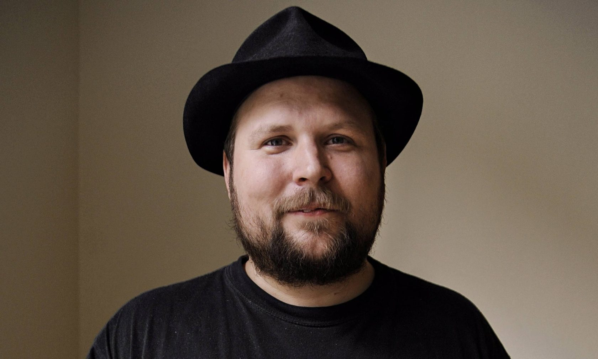
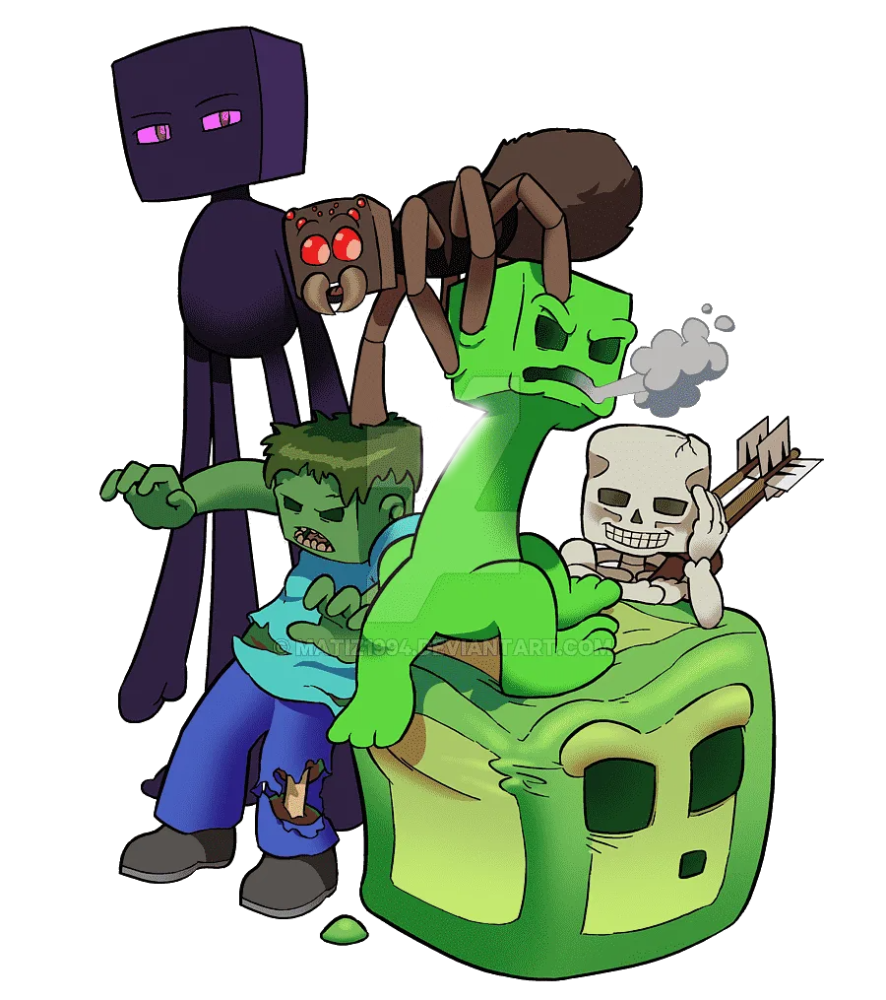

Маркус Перссон является участником организации Менса и членом Пиратской партии Швеции. В Reddit Перссон сообщил, что он является атеистом и анонимно жертвует деньги на благотворительность. 13 августа 2011 года Перссон женился на Элин Зеттерстранд. В апреле 2012 года у пары родилась дочь Минна Альмина Зельда Зеттерстранд. В июле того же года пара подала на развод, брак был расторгнут в марте 2013 года. В декабре 2014 года Перссон купил дом площадью 23000 квадратных футов за 70 млн долларов в Труздейл-Истест[en], Беверли-Хиллз, штат Калифорния.
 